Technical Upgrades
Official FIA car-presentation submissions for Singapore
FIA official car-presentation, upgrade & parts-change documents
Official source; curated transcription may await review. Linked PDFs are the authority. Discovery does not extract or verify numeric values, and does not replace the curated material below.
Last successful FIA document discovery: 2026-10-09T10:46:44.494037+00:00. This is retrieval time, not issue time; newer revisions may exist.
- 2026_singapore_grand_prix_-_car_presentation_submissions.pdf (official PDF)
- 2026_singapore_grand_prix_-_car_display_procedure.pdf (official PDF)
Three teams submitted event changes
| Team | Submission |
|---|---|
| McLaren | High-cooling front brake duct. |
| Mercedes | New front wing with matching endplate, footplate and diveplane changes. |
| Red Bull | Revised front wing for local load and an enlarged rear wheel-bodywork exit duct for cooling. |
No updates submitted
Ferrari, Williams, Racing Bulls, Aston Martin, Haas, Alpine, Audi and Cadillac declared no new components in the published submission. That is an explicit no-update declaration, not missing data.
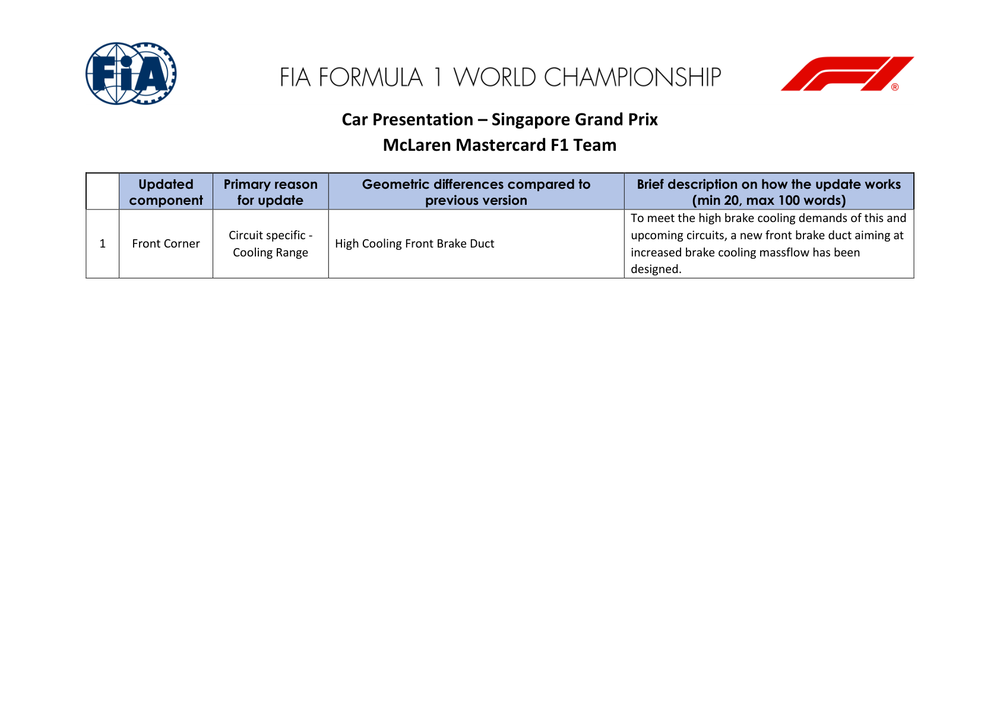
Official FIA document screenshots
Automatically rendered from the official PDFs. These figures do not update or verify the curated numeric transcriptions above. Unchanged pages already illustrated above are not repeated here.
2026_singapore_grand_prix_-_car_presentation_submissions.pdf
PDF retrieved 2026-10-09T10:46:48+00:00; this is not its issue date.
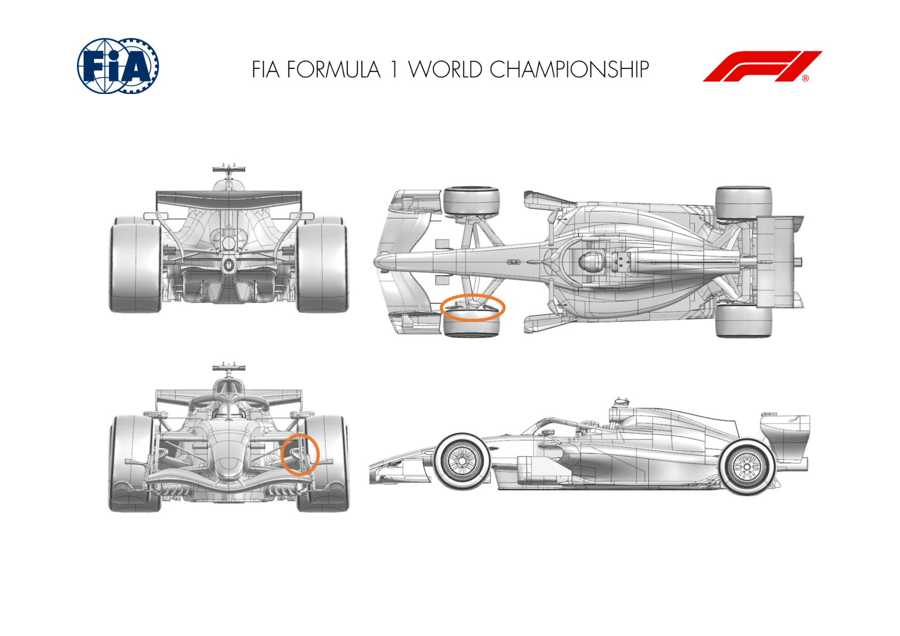
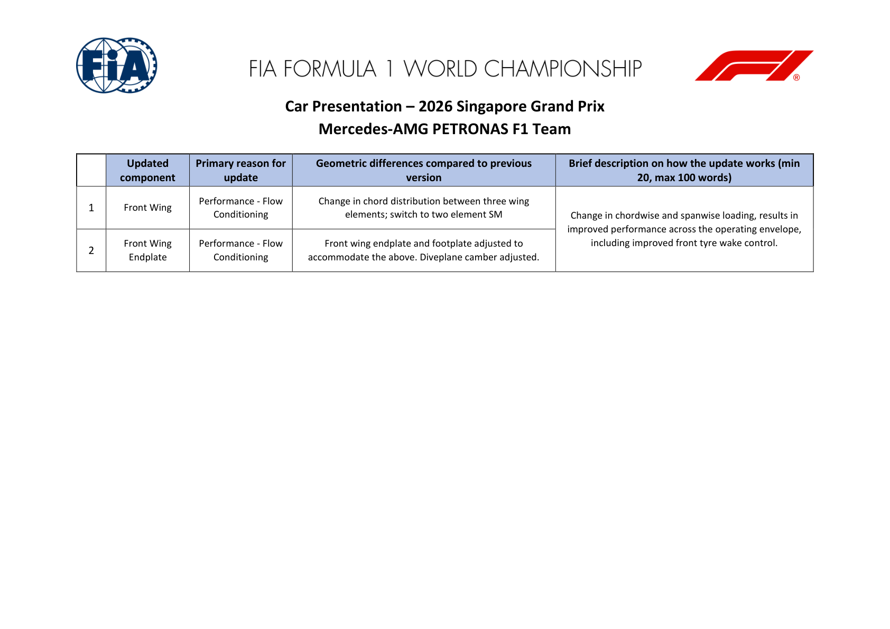
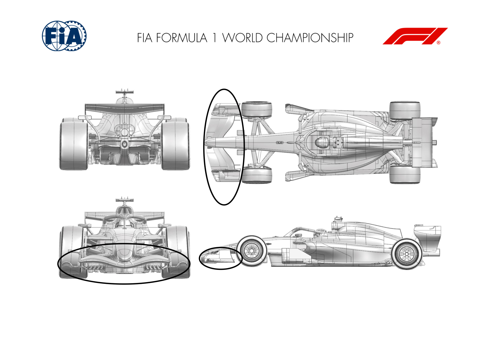
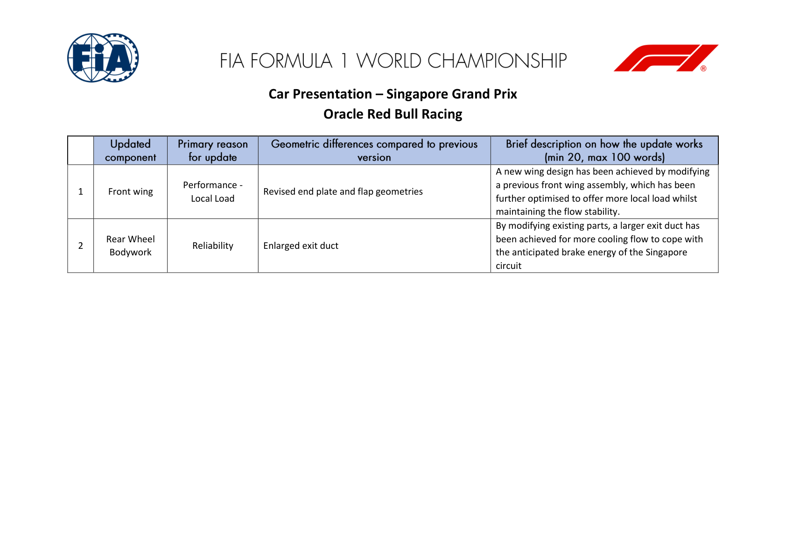
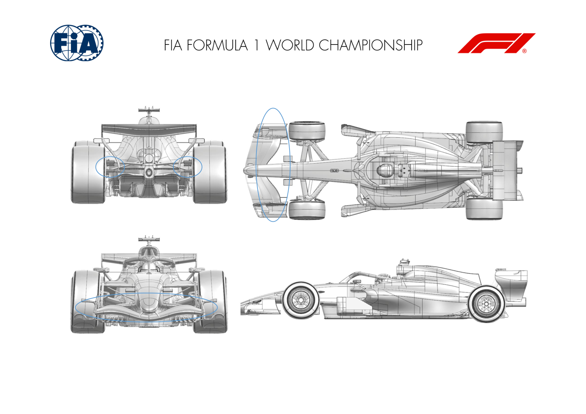
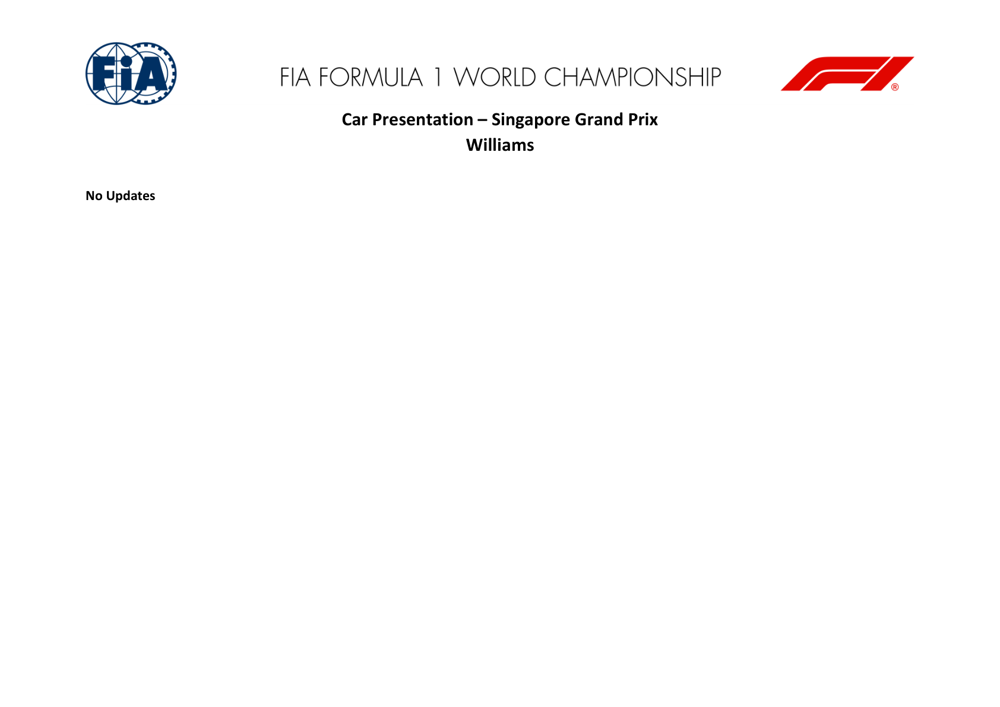
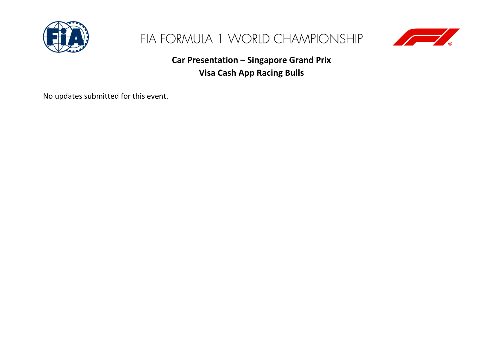
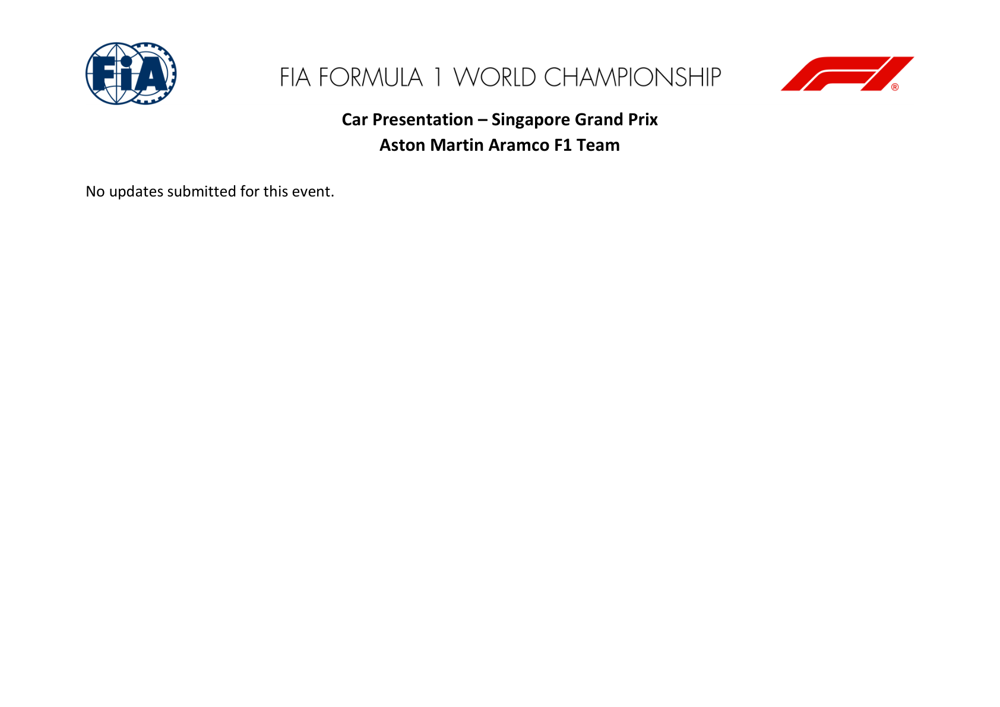
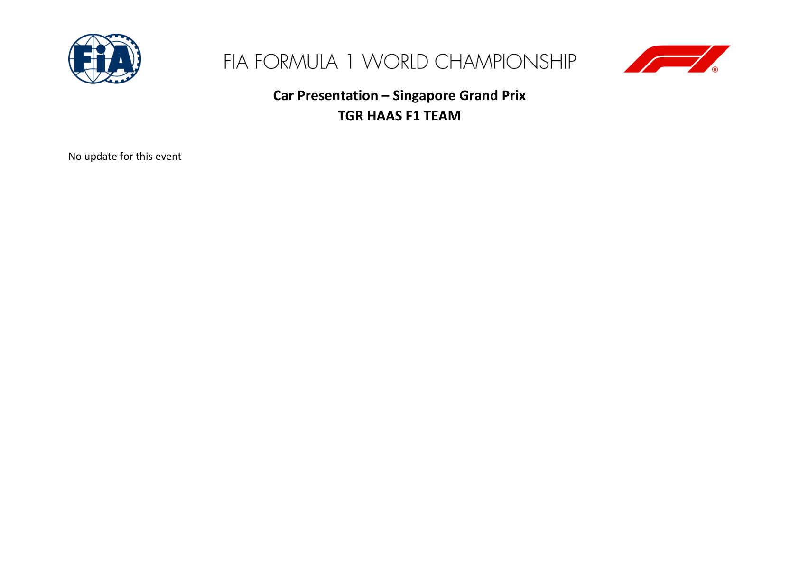
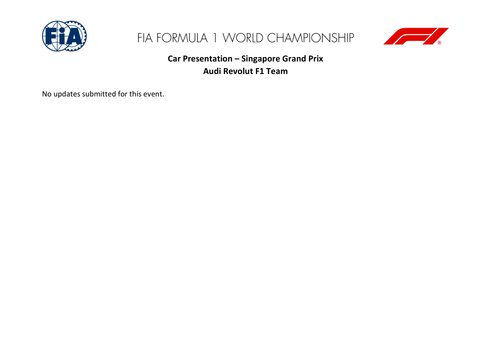
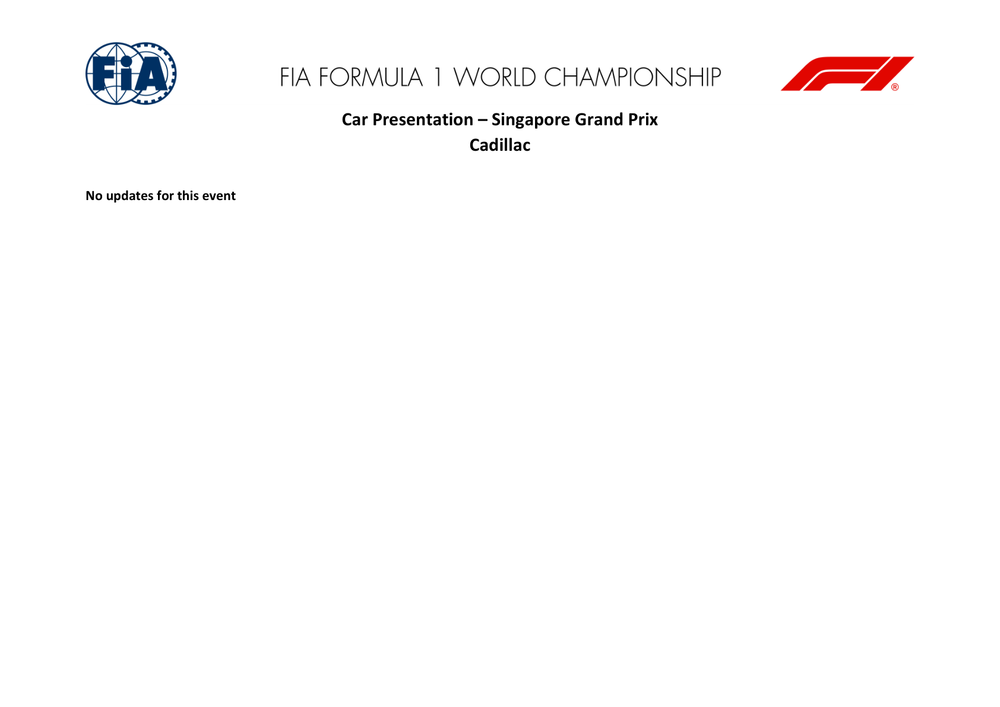
2026_singapore_grand_prix_-_car_display_procedure.pdf
PDF retrieved 2026-10-09T10:46:48+00:00; this is not its issue date.
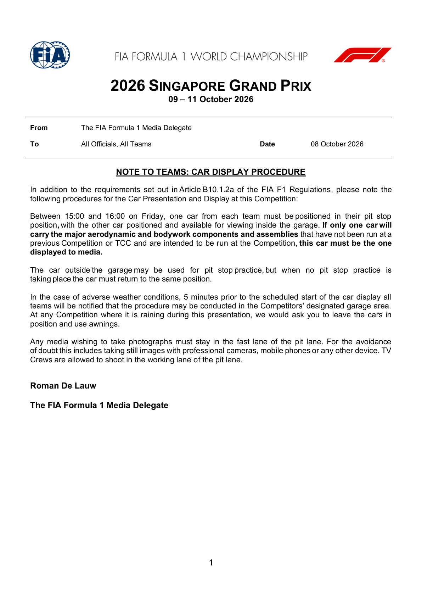